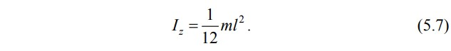

Теоретические сведения
Моментом инерции Iz системы материальных точек относительно оси z называют физическую величину, равную сумме произведений масс материальных точек mi на квадраты расстояний их до оси вращения ri
Формула для момента инерции абсолютно твердого тела следует из (5.1), если рассматривать тело как систему частиц (материальных точек) с неизменным расстоянием между ними (рис. 5.1). Заменяя в (5.1) массу материальной точки mi на массу dm = ρ * dV элементарного объема dV тела и переходя от суммирования к интегрированию по объему V тела, получим формулу, которую используют для вычисления момента инерции абсолютно твердого тела (где ρ – плотность материала тела).
Момент инерции в динамике вращательного движения играет ту же роль, что и масса тела в динамике поступательного движения, т. е. является мерой инертности при вращательном движении. Напомним, что инертность – это способность тел препятствовать изменению своей скорости относительно инерциальной системы отсчета при воздействии на него внешних сил. Таким образом, чем больший момент инерции относительно некоторой оси имеет тело, тем труднее раскрутить это тело относительно данной оси.
Момент инерции тела зависит от распределения масс относительно данной оси. Если вычислить сумму (5.1) или интеграл (5.2), то момент инерции любого тела можно выразить через массу тела, его геометрические размеры и положение относительно оси вращения. Во многих случаях расчеты существенно упрощаются при использовании двух свойств момента инерции, которые следуют из определения (5.1) этой величины – аддитивность момента инерции и теорема Штейнера
Аддитивность (от англ. to add – добавлять, суммировать) момента инерции означает, что момент инерции системы относительно некоторой оси равен сумме моментов инерции тел или всех частей системы относительно этой оси. В случае непрерывно распределенной массы (твердого тела) сумма переходит в интеграл (где Ikz – моменты инерции тел, входящих в систему (k = 1, n); dIz – момент инерции малого элемента объема тела dV)
По теореме Штейнера момент инерции Iz тела относительно произвольной оси z равен сумме момента инерции IСz' относительно оси z', параллельной данной и проходящей через центр масс C тела, и произведения массы тела m на квадрат расстояния d между осями (рис. 5.2):
Эта теорема сводит вычисление момента инерции относительно произвольной оси к вычислению момента инерции относительно оси, проходящей через центр масс тела
Рассмотрим несколько примеров вычисления моментов инерции тел, имеющих простую форму.
Момент инерции однородного тонкого стержня. Определим момент инерции однородного стержня длиной относительно оси z, перпендикулярной стержню и проходящей через его центр масс С рис. 5.3, а
Разделим стержень на бесконечно малые элементы длиной dx. Объем элемента dV = S * dx, где S – площадь поперечного сечения стержня. Момент инерции элемента, расположенного на расстоянии x от оси, определяется соотношением

Согласно (5.2) момент инерции стержня (где множитель 2 учитывает две половины стержня, расположенные симметрично относительно оси z).
Так как масса стержня m = ρ * V = ρ * S * l, получим
 Момент инерции стержня относительно оси, проходящей через один из его концов (рис. 5.3, б), найдем, воспользовавшись теоремой Штейнера (5.4). Учитывая момент инерции стержня относительно
центра масс (5.7) и расстояние между осями
d = l / 2, получим
Момент инерции параллелепипеда. Определим момент инерции параллелепипеда относительно оси z, проходящей через
его центр масс перпендикулярно боковым граням (рис. 5.4). Через a, b, c обозначим боковые ребра параллелепипеда.
Разделим параллелепипед на тонкие пластины толщиной dx, параллельные одной из граней параллелепипеда. Они имеют объем dV = a * с * dx и массу dm = ρ * dV = ρ * a * с * dx. Пластину можно считать совокупностью параллельных полосок (стержней) длиной а, поэтому ее момент инерции относительно оси z′, проходящей через центр масс пластины параллельно оси z, определяется соотношением (5.7):
Момент инерции пластины относительно оси z, расположенной на расстоянии x от нее, найдем по теореме
Принимая во внимание, что расстояние x для разных пластин изменяется от 0 до b / 2, по формуле (5.2) найдем момент инерции параллелепипеда (где учтены две половины параллелепипеда, расположенные симметрично относительно оси z)
Учитывая в (5.11), что V = a * c * b – объем параллелепипеда и m = ρ*V – его масса, окончательно получим
Если тело имеет сложную геометрическую форму или распределение плотности по объему неизвестно, то вычисление моментов инерции оказывается затруднительным либо невозможным. В этом случае целесообразно использовать экспериментальные методы. В данной работе для определения момента инерции тела Iz применяется крутильный маятник, показанный на рис. 5.5. Исследуемое тело 1 закрепляется с помощью подвижной балки 2 на рамке 3, подвешенной на стальной вертикальной проволоке 4, натянутой между двумя кронштейнами 5, жестко соединенными состойкой 6 установки. За рамкой имеется электромагнит 7, который фиксирует ее в отклоненном на угол ϕ0 положении. Угол отклонения определяется по шкале 8. Подсчет числа N колебаний рамки осуществляет электронная система, основными деталями которой являются фотоэлектрический датчик 9, который соединен с цифровым счетчиком числа колебаний и секундомером 10.
Под действием сил упругости закрученной на угол ϕ проволоки рамка совершает крутильные колебания. Согласно закону Гука момент сил упругости, действующий на рамку где f – коэффициент крутильной жесткости проволоки, который называют модулем кручения
Угловое ускорение рамки ε = d2 ϕ / dt2 определяется основным уравнением динамики вращательного движения:
Пренебрегая сопротивлением воздуха и учитывая (5.13), из этого уравнения следует дифференциальное уравнение колебаний рамк где ω0 – циклическая частота колебаний рамки.
Решение уравнения (5.15) имеет вид гармонических колебаний:

Из (5.16) следует, что период колебаний рамки определяется соотношением
Измеряя на эксперименте период колебаний T1 рамки и период колебаний T2 рамки с закрепленным на ней телом, получим систему двух уравнений где I1z – момент инерции рамки; Iz – момент инерции исследуемого тела.
Отсюда следует, что
Погрешность косвенного измерения момента инерции Iz по формуле (5.19) определяется погрешностями момента инерции рамки ΔI1z и периодов колебаний ΔT1, ΔT2. Соотношения для расчета относительной ε и абсолютной ΔIz погрешностей следуют из (О10):
Моме́нт ине́рции — тензорная физическая величина, мера инертности во вращательном движении вокруг оси, подобно тому, как масса тела является мерой его инертности в поступательном движении. Характеризуется распределением масс в теле. Момент инерции равен сумме произведений элементарных масс на квадрат их расстояний до базового множества, которое, формально, может представлять собой не обязательно ось вращения (т.е. прямую), но и точку или плоскость. В последних случаях говорят о моменте инерции относительно точки или плоскости, а возникать такие величины могут в формальных вычислениях, например, при расчете тензора инерции.
Единица измерения в Международной системе единиц (СИ): кг·м².Обозначение: I или J.
Рудольф Штейнер (1861–1925) — современный ученый, доктор философии, педагог, художник, поэт, режиссер, реформатор теории познания и практически всех сфер человеческой культуры, включая естественные и точные науки, а также медицину. Основанное им научное направление, которое впервые в истории Нового времени является также и духовным, назвал Духовной наукой, или Антропософией — наукой о человечности в человеке и о законах человеческого развития, о взаимосвязях духовного и материального миров, о месте и роли человека в обоих мирах. Организовал Всеобщее Антропософское Общество, которое объединяет специалистов в различных областях, поддерживающих и развивающих его начинания и связывающих будущее планеты с одухотворением научного мировоззрения.
Враща́тельное движе́ние — вид механического движения. При вращательном движении материальная точка описывает окружность. При вращательном движении абсолютно твёрдого тела все его точки описывают окружности, расположенные в параллельных плоскостях. Центры всех окружностей лежат при этом на одной прямой, перпендикулярной к плоскостям окружностей и называемой осью вращения. Ось вращения может располагаться внутри тела и за его пределами. Ось вращения в данной системе отсчёта может быть как подвижной, так и неподвижной. Например, в системе отсчёта, связанной с Землёй, ось вращения ротора генератора на электростанции неподвижна. При выборе некоторых осей вращения, можно получить сложное вращательное движение — сферическое движение, когда точки тела движутся по сферам. При вращении вокруг неподвижной оси, не проходящей через центр тела или вращающуюся материальную точку, вращательное движение называется круговым.
Безразмерные моменты инерции планет и спутников Большое значение для исследований внутренней структуры планет и их спутников имеют их безразмерные моменты инерции. Безразмерный момент инерции тела радиуса r и массы m равен отношению его момента инерции относительно оси вращения к моменту инерции материальной точки той же массы относительно неподвижной оси вращения, расположенной на расстоянии r (равному mr2). Эта величина отражает распределение массы по глубине. Одним из методов её измерения у планет и спутников является определение доплеровского смещения радиосигнала, передаваемого АМС, пролетающей около данной планеты или спутника. Для тонкостенной сферы безразмерный момент инерции равен 2/3 (~0,67), для однородного шара — 0,4, и вообще тем меньше, чем большая масса тела сосредоточена у его центра. Например, у Луны безразмерный момент инерции близок к 0,4 (равен 0,391), поэтому предполагают, что она относительно однородна, её плотность с глубиной меняется мало. Безразмерный момент инерции Земли меньше, чем у однородного шара (равен 0,335), что является аргументом в пользу существования у неё плотного ядра[
Закон Гука основной закон теории упругости. Он был открыт английским ученым Робертом Гуком в 1660 году, когда ему было 25 лет. Закон Гука гласит: Сила упругости, возникающая при упругой деформации растяжения или сжатия тела, пропорциональна абсолютному значению изменения длины тела. Если удлинение тела обозначить через , а силу упругости через Fупр то закон Гука можно записать в виде следующей математической формулы: где k — коэффициент пропорциональности, называемый жесткостью тела. Знак минус перед правой частью уравнения указывает на противоположные направления силы упругости и удлинения Единицей жесткости в СИ является ньютон на метр (1 Н/м).
У каждого тела своя жесткость. Чем больше жесткость тела (пружины, проволоки, стержня и т. д.), тем меньше оно изменяет свою длину под действием данной силы. Следует помнить, что закон Гука справедлив только для упругой деформации. Закон Гука хорошо выполняется только при малых деформациях. При больших деформациях изменение длины перестает быть прямо пропорциональным приложенной силе, а при очень больших деформациях тело разрушается.
К числу открытий Гука принадлежат: открытие пропорциональности между упругими растяжениями, сжатиями и изгибами, и производящими их напряжениями (закон Гука), правильная формулировка закона всемирного тяготения (приоритет Гука оспаривался Ньютоном, но, по-видимому, не в части формулировки — сила тяготения обратно пропорциональна квадрату расстояния; кроме того, Ньютон утверждал о независимом и более раннем открытии этой формулы, которую, однако, до открытия Гуком никому не сообщал), открытие цветов тонких плёнок (то есть, в конечном итоге, явления интерференции света), идея о волнообразном распространении света (более или менее одновременно с Гюйгенсом), экспериментальное обоснование её открытой Гуком интерференцией света, волновая теория света, гипотеза о поперечном характере световых волн, открытия в акустике, например, демонстрация того, что высота звука определяется частотой колебаний, теоретическое положение о сущности теплоты как движения частиц тела, открытие постоянства температуры таяния льда и кипения воды, закон Бойля (каков здесь вклад Гука, Бойля и его ученика Ричарда Таунли (Richard Townley) — не до конца ясно), Живая клетка с помощью усовершенствованного им микроскопа; также женскую яйцеклетку и мужские сперматозоиды. Гуку же принадлежит сам термин «клетка» (англ. cell). и многое другое. Кроме закона упругих деформаций, во многих открытиях Гук не имеет исключительного первенства: так, цвета тонких плёнок в мыльных пузырях Бойль заметил за 9 лет до Гука; но Гук, наблюдая цвета тонких пластинок гипса, подметил периодичность цветов в зависимости от толщины; постоянство температуры таяния льда он открыл не ранее членов флорентийской академии, но постоянство температуры кипения воды подмечено им ранее Ренальдини; идея о волнообразном распространении света высказана им позже Гримальди, хотя и в более четком, определённом и чистом виде.